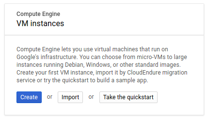
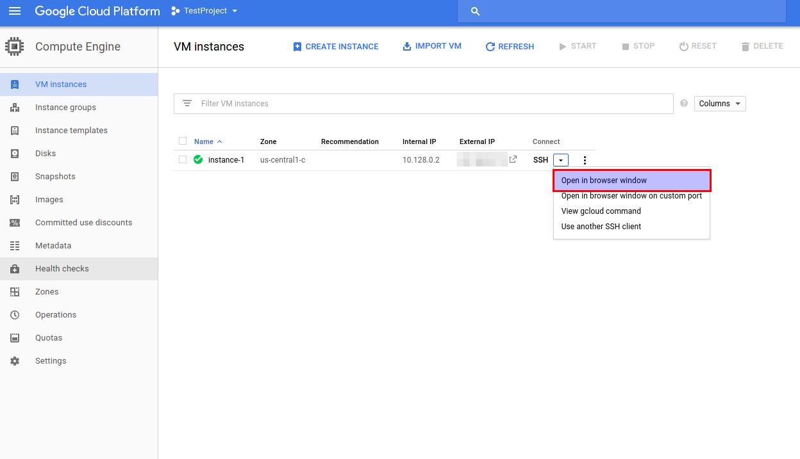

The purpose of this Lab is to familiarize students with the tools available within the Google Cloud Platform.
This lab assumes that you have already completed the account registration process and that you have access to the Google Cloud Platform Console.
In this section you will create a virtual machine and deploy a simple service.
Login to the Google Cloud Platform Console
On the Left Navigation Bar, from the COMPUTE section, select Compute Engine > VM Instances. This operation might take a minute or two the first time. You will be presented with the following dialog

Click Create. This might take a minute or two the first time. You will be presented with the Create an instance dialog.
Notice the diffent options that are available for Machine Type. Click on the Customize link and inspect the different options that are available. Also notice that the selections you maka determine the cost per hour of the instance.
For this lab we are going to create an instance of the lowest possible cost. Go back to the Basic View, and select “micro (1 shared vCPU/0.6 GB memory)” as the instance type.
Under Boot Disk, chick on “Change”, and notice that you are provided with several preconfigured images. Select ubuntu 16.04 LTS, using a standard persistent disk of 10 GB.
Under Firewall, enable both HTTP and HTTPS traffic.
Under Management provide a meaningful description of your own choice.
Let the options under Disks, Networking amd SSH Keys default.
Notice at the bottom of the page there is a link Equivalent REST or command line. Copy those values and save them. We will use those in later Labs.
Click on Create. Wait for a couple of minutes. Once this has completed, you should see the newly created instance on the “VM Instances” Console:
You can get shell access to the newly created Virtual Machine through the Google Cloud Platform web interface. Select the “Open in browser window” option from the “Connect” drop down menu:
This will open an SSH session that runs on a browser.
In order to be able to connect to the Virtual machine we just created using a normal terminal, you need first to set up SSH keys. Note that anyone that gets access to your keys will potentially able to get access to your machine(s), so you need to be very careful to not leave keys on systems that are accessible to others. It is highly encouraged to use a passphrase when creating your keys.
Open a terminal and use the ssh-keygen command to generate a new key pair. Make sure that you provide a -C parameter which is used by Google Cloud Platform to identify the user.
[jorge@chronos] > ssh-keygen -t rsa -b 2048 -f ~/.ssh/id_gcp -C jorge Generating public/private rsa key pair. Enter passphrase (empty for no passphrase): Enter same passphrase again: Your identification has been saved in /home/jorge/.ssh/id_gcp. Your public key has been saved in /home/jorge/.ssh/id_gcp.pub. The key fingerprint is: SHA256:2VAeZPZ4P7fWFTVlexNJ2vGNeAjHHsTTAQFFpFUyZVY jorge The key's randomart image is: +---[RSA 2048]----+ | .OO%*BBE| | = O=B++O| | . +.=+o=+| | + ..o +| | S . o o| | o+| | o.| | . | | | +----[SHA256]-----+
Upload the public key: While on the Compute Engine dashboard, select the Metadata option from the left navigation menu (you can go directly by entering this URL https://console.cloud.google.com/compute/metadata/sshKeys). Click on Edit, + Add Item and paste the contents of your public key. Using the example keys that were generated earlier, this will be the content of the /home/jorge/.ssh/id_gcp.pub file.
Save. Test your connection by trying to login using ssh on your terminal.
Install Docker on the newly created machine:
Execute the following commands:
sudo apt-get install apt-transport-https ca-certificates curl software-properties-common curl -fsSL https://download.docker.com/linux/ubuntu/gpg | sudo apt-key add - sudo add-apt-repository "deb [arch=amd64] https://download.docker.com/linux/ubuntu $(lsb_release -cs) stable" sudo apt-get update sudo apt-get install docker-ce
Test your installation
sudo docker run hello-world
Run apache webserver container in the background
sudo docker run -d -p 80:80 httpd
Verify the container is running
sudo docker ps
Open a web browser and browse to the External IP Address of your Virtual Machine
Once you have finished the previous steps, go back to the VM instance dashboard and stop the instance.